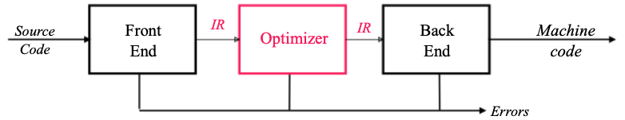
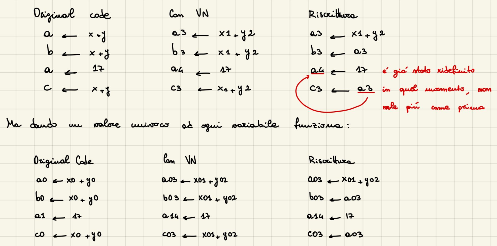
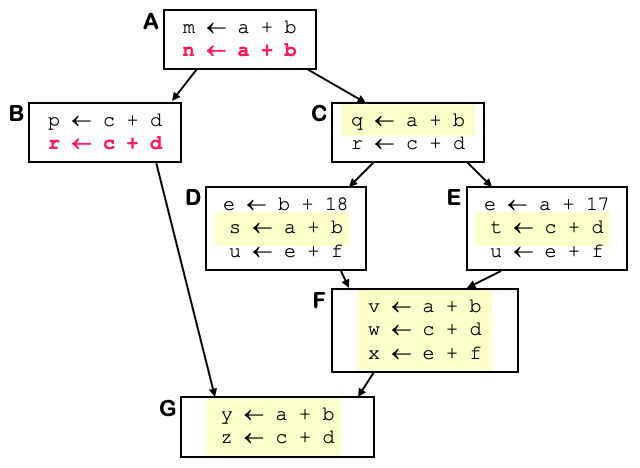

Introduzione all'ottimizzazione di codice
Tra il front-end e il back-end vi si trova appunto il middle-end, anche chiamato ottimizzatore. Il suo compito è: analizzare IR e riscriverlo o traformarlo, quetso per:
- l'obiettivo primario, cioè ridurre il tempo di esecuzione del codice compilato, migliorando lo spazio, il consumo energetico, ...;
- preservando il "significato" del codice; 
L'ottimizzatore
L'ottimizzazione del codice può avvenire in più passi, Le trasformazioni tipiche che ad ogni passo possono essere applicate sono:
- Scoprire che un valore rimane costante in tutto il flusso del programma;
- Spostare un'esecuzione in una parte di codice che viene eseguita meno frequentemente: se un pezzo di codice risulta invariato, che valuta sempre lo stesso valore, lo muovo in una parte del programma che viene eseguita meno frequentemente;
- Specializzare alcuni calcoli in base al contesto: inline delle funzioni;
- Scoprire che qualche calcolo è ridondante e rimuoverlo;
- Rimuovere codice che non viene mai eseguito o che non è raggiungibile;
- Codificare un idioma è una forma particolarmente efficiente;
Le regole per l'ottimizzazione
Il compilatore può implementare una procedura in molti modi, il compito dell'ottimizzatore è quello di trovare un'implementazione che sia "migliore": velocità, peso, spazio, ... Per soddisfare questo:
- L'ottimizzatore analizza il codice per ricavare informazioni sul comportamento in fase di esecuzione;
- Utilizza tale conoscenza nel tentativo di migliorare il codice;
Eliminazione della ridondanza: esempio
Una espressione del tipo $x+y$ è ridondante se e solo se, lungo ogni percorso dall'ingresso della procedura, è stato valutato, e le sue sotto-espressioni costituenti ($x$ e $y$) non sono state ridefinite. Se il compilatore può provare che l'espressione è ridondante, può conservare i risultati delle valutazioni precedenti e può sostituire la valutazione corrente con un riferimento. Due sono i problemi: • Dimostrare che $x+y$ è ridondante o disponibile; • Riscrivere il codice per eliminare la valutazione ridondante; Una tecnica per realizzare entrambi è chiamata numerazione dei valori.
Value Numbering
La numerazione dei valori è una tecnica per risolvere entrambi i problemi. Consiste nel:
- Assegnare un identificatore univoco V(n) a ogni valore calcolato, rappresentando ciascuna espressione con il suo risultato.
- Quando un'espressione $x+y$ viene calcolata, il risultato viene associato a un identificatore, V($x+y$) = V(j), se l'espressione compare nuovamente, il compilatore verifica:
- Se l'identificatore, V(j), è ancora valido (cioè $x$ e $y$ non sono cambiati).
- In caso positivo, l'identificatore può essere riutilizzato.

Semplici estensioni alla numerazione dei valori
Il folding delle costanti consiste nel riconoscere e valutare espressioni composte esclusivamente da valori costanti direttamente in fase di compilazione, evitando calcoli a runtime.
- Aggiungere un bit che registra quando un valore è costante;
- Valutare i valori costanti in fase di compilazione;
- Sostituire con load immediate o operandi immediati: se il risultato è una costante, può essere caricato direttamente in un registro o utilizzato come operando immediato;
Le identità algebriche permettono al compilatore di semplificare ulteriormente le espressioni utilizzando proprietà matematiche.
- Deve controllare (molti) casi speciali: il compilatore deve verificare specifiche configurazioni di espressioni che possono essere semplificate tramite identità algebriche;
- Sostituisce il risultato con l'input VN: il compilatore utilizza la numerazione dei valori per sostituire il risultato di un'operazione con uno dei suoi input se l'operazione è semplificabile;
- Costruisce un albero decisionale sull'operazione: per operazioni più complesse, il compilatore costruisce un albero decisionale che valuta le regole algebriche applicabili;
Il problema principale del Value Numbering è che non si riescono a propagare le variabili di un Basic Block in un altro Basic Block. Vediamo un esempio: 
Notiamo che nel blocco A c'è un'opportunità di ottimizzazione come nel blocco B, ma vediamo che l'ottimizzazione che dovrebbe essere fatta nel blocco A, potrei applicarla anche nel blocco C e non solo.
Ottimizzazione di Scope
L'ottimizzazione di scope si riferisce al livello di granularità su cui un compilatore esegue l'analisi e la trasformazione del codice per migliorare le prestazioni o ridurre l'occupazione di memoria. "Scope" qui identifica la regione del codice considerata durante l'ottimizzazione. A seconda dell'estensione dello scope, cambiano le strategie, le tecniche e le sfide dell'ottimizzazione.
Ottimizzazione Locale
- Opera interamente all'interno di un singolo basic block
- Le proprietà del blocco portano a forti ottimizzazioni Ottimizzazione Regionale
- Operare su una regione nel CFG che contiene più blocchi collegati Ottimizzazione dell'intera procedura
- Analizza e ottimizza l'intero grafo di controllo del flusso (CFG) di una singola procedura o funzione. Ottimizzazione dell'intero programma
- Operare su alcuni o tutti i grafi delle chiamate (procedure multiple)
- Deve fare i conti con chiamata/ritorno e associazione dei parametri
Spazio dei nomi SSA
In SSA, ogni variabile (o nome) è assegnata una sola volta nel codice, garantendo unicità e rendendo più semplice tracciare l'origine e l'uso delle variabili. Due principi fondamentali:
- Ogni nome è definito da un'unica operazione: una variabile viene assegnata una sola volta e non cambia mai valore successivamente.
- Ogni operando fa riferimento a un'unica definizione: quando si usa una variabile, il riferimento punta direttamente alla sua unica definizione, non ci sono ambiguità su quale valore di una variabile venga utilizzato. Nel codice reale, percorsi di esecuzione multipli possono convergere in un singolo punto, e le variabili possono avere valori diversi a seconda del percorso eseguito, nel codice SSA, questo crea un problema, poiché dobbiamo rispettare i due principi.
Soluzione: Funzioni $\phi$ Le funzioni $\phi$ sono un costrutto speciale che risolve il problema dei punti di unione, una funzione $\phi$ seleziona il valore corretto di una variabile in base al percorso eseguito.
if (cond) {
x1 = 1;
} else {
x2 = 2;
}
x3 = φ(x1, x2); // x3 assume il valore di x1 o x2 a seconda del percorso
- La funzione $\phi$ viene inserita automaticamente dal compilatore nei punti di unione (ad esempio, dopo un if o un ciclo).
- Ogni ramo del codice contribuisce con una variabile definita nel suo percorso.
Loop Unrolling - Tecnica Regionale
Loop Unrolling (srotolamento del ciclo) è una tecnica di ottimizzazione utilizzata nei compilatori per migliorare l'efficienza dei loop, riducendo il sovraccarico legato ai test condizionali e ai salti, e migliorando le opportunità di ottimizzazione locale.
Le applicazioni trascorrono molto tempo nell'esecuzione dei loop. Ogni iterazione di un ciclo introduce un sovraccaricodovuto a:
- Test condizionali (per verificare se il ciclo deve continuare).
- Rami (salti al punto iniziale del ciclo per la prossima iterazione).
- Incrementi o modifiche (variabili di controllo del ciclo). Lo srotolamento riduce questo sovraccarico eliminando alcune iterazioni del ciclo e duplicando il corpo del loop per eseguirlo più volte in una sola iterazione. Esempio:
for (int i = 0; i < 4; i++) {
A[i] = A[i] + 1;
}
Unrolling:
A[0] = A[0] + 1;
A[1] = A[1] + 1;
A[2] = A[2] + 1;
A[3] = A[3] + 1;
Unrolling parziale In molti casi, è inefficiente o impossibile srotolare completamente un ciclo, ad esempio quando il numero di iterazioni è molto grande o sconosciuto. In questi casi, si applica uno srotolamento parziale duplicando solo alcune iterazioni.
Unrolling con limiti sconosciuti Se i limiti del ciclo non sono fissi (ad esempio, se dipendono da un input), è necessario aggiungere un loop di guardia per gestire i casi rimanenti.
- Loop di guardia gestisce le iterazioni rimanenti quando il numero totale di iterazioni non è divisibile per il fattore di srotolamento.
- La maggior parte dei benefici dello srotolamento è preservata.
- Funziona anche per limiti superiori e inferiori arbitrari.
Ottimizzazioni aggiuntive
- Eliminazione delle copie alla fine del ciclo: nei loop con copie finali ridondanti, lo srotolamento può eliminarle. Questo avviene calcolando il minimo comune multiplo (LCM) delle lunghezze del ciclo di copia.
- Blocchi più lunghi per ottimizzazioni locali: lo srotolamento crea blocchi di codice più lunghi, aumentando le opportunità di ottimizzazione locale (ad esempio, eliminazione di espressioni ridondanti).
Trovare variabili non inizializzate - Tecnica globale
Quando una variabile viene utilizzata prima di essere definita, può portare a errori logici nel programma. Questa situazione può essere individuata attraverso l'analisi globale del flusso di dati.
Flusso di dati e variabili non inizializzate: Una variabile è detta viva in un punto del programma se il suo valore potrebbe essere utilizzato successivamente. Se una variabile è viva nel blocco di ingresso di una procedura senza essere inizializzata, rappresenta un potenziale errore logico. L'obiettivo del compilatore è individuare e segnalare queste variabili.
Concetti chiave
- Costruzione del CFG (Control Flow Graph)
- Calcolo dei set UEVAR e VARKILL:
- UEVAR (Used-Variable): insieme delle variabili usate nel blocco prima di essere ridefinite.
- esempio: in
x = a + b,aebsono UEVAR se non sono ridefiniti precedentemente nel blocco.
- esempio: in
- VARKILL: insieme delle variabili definite (o "uccise") nel blocco.
- esempio: in
x = a + b,xappartiene a VARKILL.
- esempio: in
- UEVAR (Used-Variable): insieme delle variabili usate nel blocco prima di essere ridefinite.
- LIVEOUT: LIVEOUT(n) è l'insieme delle variabili vive alla fine del blocco
n, si calcola iterativamente utilizzando le definizioni di UEVAR e VARKILL.
Esempio:
x = a + b;
y = x * 2;
if (y > 10) {
z = y - 5;
} else {
w = y + 5;
}
- CFG:
- Nodo 1:
x = a + b - Nodo 2:
y = x * 2 - Nodo 3:
z = y - 5(ramo if) - Nodo 4:
w = y + 5(ramo else)
- Nodo 1:
- UEVAR e VARKILL:
- Nodo 1:
UEVAR = {a, b},VARKILL = {x} - Nodo 2:
UEVAR = {x},VARKILL = {y} - Nodo 3:
UEVAR = {y},VARKILL = {z} - Nodo 4:
UEVAR = {y},VARKILL = {w}
- Nodo 1:
- LIVEOUT calcolato iterativamente:
- Nodo 3:
LIVEOUT(3) = {}(nessun successore, z non viene usato dopo). - Nodo 4:
LIVEOUT(4) = {}(nessun successore, w non viene usato dopo). - Nodo 2:
LIVEOUT(2) = UEVAR(3) ∪ UEVAR(4) = {y}. - Nodo 1:
LIVEOUT(1) = UEVAR(2) ∪ (LIVEOUT(2) - VARKILL(2)) = {x, y}.
- Nodo 3:
Dopo aver calcolato LIVEOUT, controllare:
- Se una variabile è in
LIVEOUTdel blocco iniziale (LIVEOUT(n0)), ma non è mai stata inizializzata, il compilatore segnala un errore. - Ad esempio, se
aobnon sono inizializzati nel programma sopra, il compilatore lo segnala.
Ottimizzazioni del codice tramite LIVEOUT
- Eliminazione delle istruzioni non necessarie;
- Ordinare i calcoli per migliorare la convergenza
- Calcolo RPO: PostOrder, ordine in cui i nodi sono visitati terminando ogni ramo del CFG.